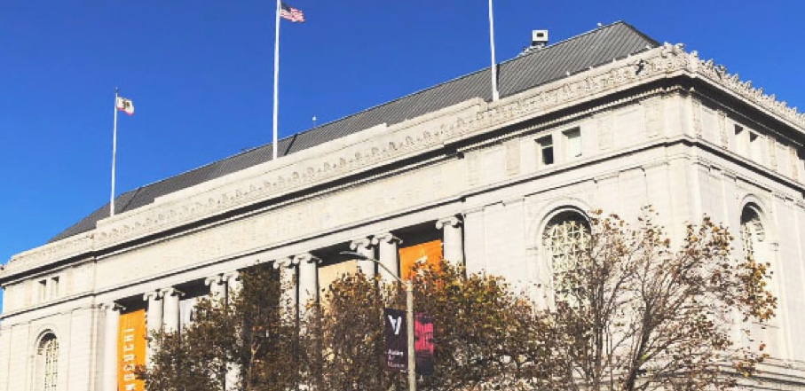

Asian Art Museum is in the center of San Francisco. This museum opened in 1966 as a wing of the M.H. de Young Memorial Museum in Golden Gate Park. Avery Brundage’s collector of Asian art gave birth to the Asian Art Museum in 1975, and then Chong-Moon Lee made a $15 million donation to launch the funding campaign for a new building for the museum.